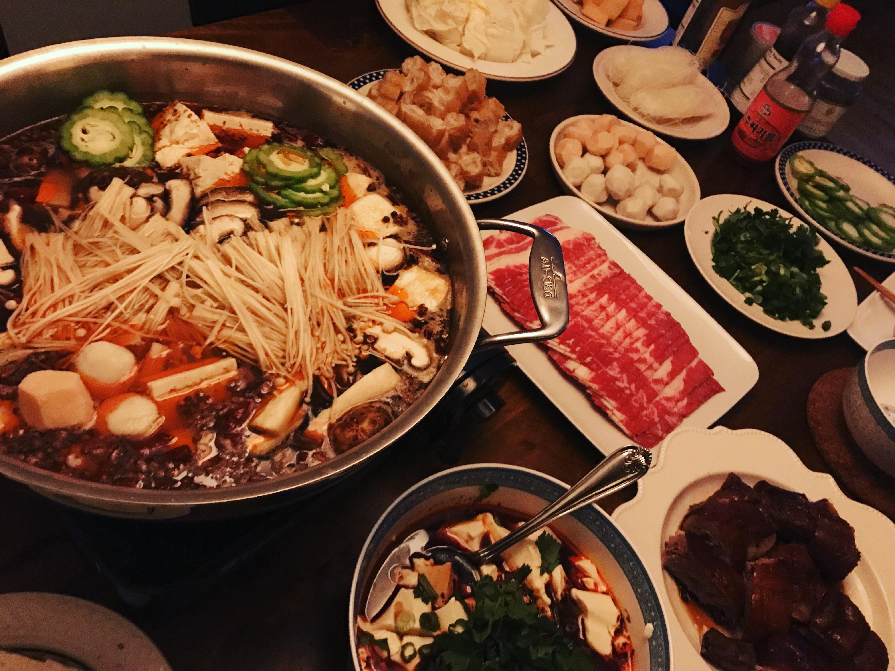

Hey everyone, welcome to my profile :)
My name is Marine and I am currently a first year student in the BBA program at ESSEC Business School. I am half-French half-Indonesian and I grew up in Madrid. I am passionate about music and I love reading.
Have a listen to my playlists!Music
I started playing music when I was only 5 years old. I first started learning the piano then learnt the trumpet when I was around 9 years old. I played in orchestras and bands during my high school years. I am currently a member of JAM ESSEC, the music association of the school. Here are my favourite albums: hyukoh's 23 and vbnd's Daughter of the Sun.
South Korea
My other passion is South Korea. It might seem a bit weird to name a country as a passion but everything about South Korea amazes me. I discovered the country through K-pop in 2011 but I quickly took interest in the language, but also the culture and the history. Now I listen more to K-Hiphop or K-indie music. Hopefully I will go to Korea during my internation exchange. I am the treasurer of ESSEC Korea, an association promoting Korean culture in the school.
Food
Lastly I am a FOODIE. I've liked eating since I was a baby and I always enjoyed going to the restaurant but recently I took an interest on cooking. It is very satisfying to realize something you cooked tastes good. I'm actually thinking of taking cooking classes to upgrade my cooking skills. My favourite type of food is Asian food, especially Korean and Indonesian food. Here are my favourites: martabak telor (Indonesian folded spicy omelette), Chinese hotpot and Korean bibimbap.
